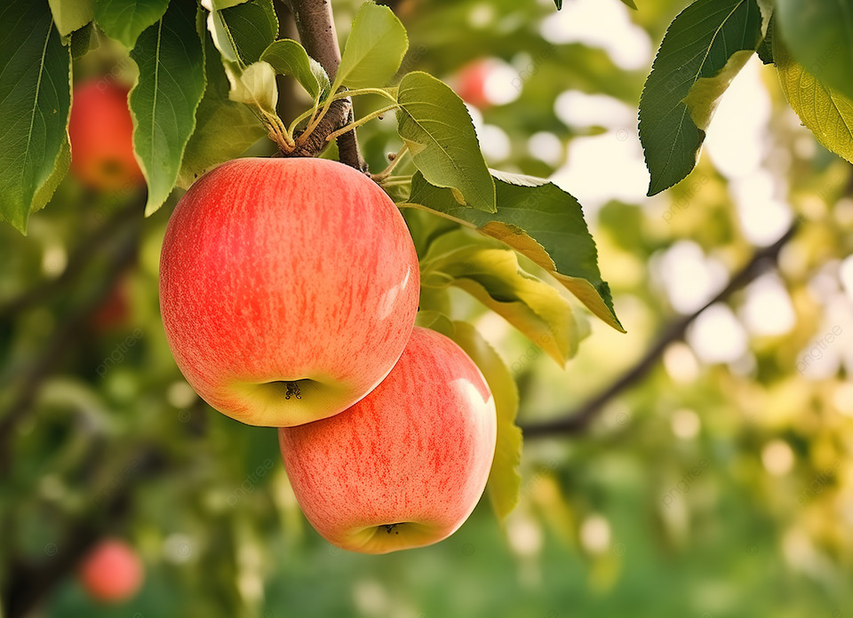
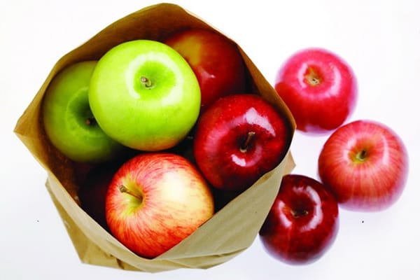
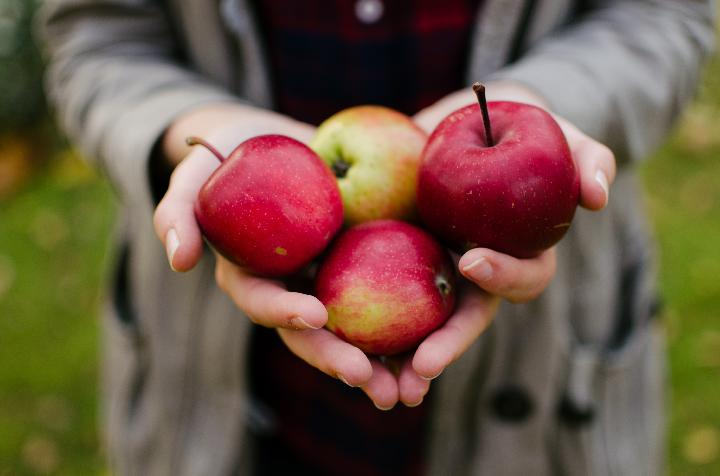

Agriculture
INKA
Inspeksi Kualitas Buah Apel
By Solar




By Solar
Aplikasi INKA (Inspeksi Kualitas Apel)
merupakan sebuah solusi perangkat lunak
dirancang untuk membantu dalam
proses inspeksi buah apel. Aplikasi
ini ditujukan untuk berbagai pihak yang
terlibat dalam industri pertanian, seperti
petani, produsen, distributor, dan
pengekspor apel.
Apel segar memiliki tampilan yang sempurna dan biasanya memiliki kulit yang mengkilap dan halus yang bisa berwarna merah, hijau, atau campuran dari warna-warna tersebut, tergantung pada jenisnya.
Apel yang tidak segar adalah frasa yang menggambarkan keadaan apel yang telah kehilangan kesegarannya. Ini mengacu pada apel yang mungkin telah mengalami oksidasi, penuaan, atau penyimpanan yang tidak tepat sehingga kualitasnya menurun.
Kami adalah tim yang berkomitmen untuk memberikan solusi inovatif dalam mendeteksi kualitas buah apel secara otomatis melalui penggunaan algoritma YOLOv5. Dengan berbagai penelitian dan pengembangan yang kami lakukan, INKA menjadi sebuah platform unggul yang memberikan kemudahan dan keakuratan dalam inspeksi buah apel.
Aplikasi INKA akan memperlihatkan hasil analisa dari buah apel yang telah di potret dan mengklasifikasikan apel tersebut ke dalam “Apel Segar” atau “Apel Tidak Segar”
Visi kami adalah menciptakan revolusi dalam industri pertanian dengan menjadi pionir dalam penggunaan teknologi deteksi kualitas buah apel. Kami berusaha untuk membawa perubahan positif dengan memperkenalkan solusi terkini yang memadukan kecerdasan buatan dan pertanian, mengarah pada pertanian yang lebih efisien, berkelanjutan, dan berdaya saing tinggi.
Misi kami adalah menyediakan solusi terdepan untuk mendeteksi kualitas buah apel dengan cepat, akurat, dan efisien. Kami berkomitmen untuk membantu para petani, pengusaha, dan pelaku industri pertanian dalam meningkatkan produktivitas mereka melalui teknologi terkini.